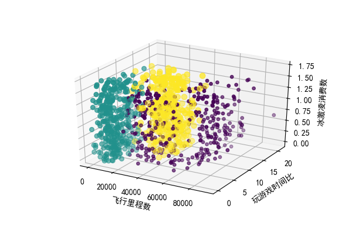
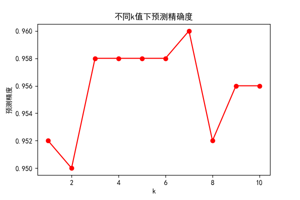

1. 说明
此文案例来自于《机器学习实战》，适合初学机器学习的入门者，要运行本文的实例代码需要安装 numpy、 scikit-learn、matplotlib 以及jupyter，博主使用的是 python2, 所有代码建议在jupyter 下按序运行。
2. 案列背景
有一个舍友A在约会网站上寻找对象，约会网站会推荐不同的人选，但并不是很准确。
通过总结，可以发现A他曾经交往过三种类型的人：
- 不喜欢的人
- 魅力一般的人
- 极具魅力的人
通过长期调查发现，三种人中主要具有以下特征：
- 每年获得的飞行里程数
- 玩视频游戏所耗时间百分比
- 每周消费的冰激凌公升数
于是可以通过这些特征来预测A是否对某一个人感兴趣。
3. 数据集介绍
数据集包含以上三种特征以及评价，共有1000个样本。可以在此处下载。
3.1 读取数据集
import numpy as np
def get_data_from_file(file_path):
dataset = []
labels = []
with open(file_path, 'r') as f:
line = f.readline()
while line != '':
line = line.strip()
data = line.split('\t')
#get data with list
dataset.append(map(float, data[:3]))
labels.append(int(data[-1]))
line = f.readline()
# tran to np.array()
return np.array(dataset), labels
dataset, labels = get_data_from_file('datingTestSet2.txt')
4. 样本分布
#coding:utf-8
import matplotlib.pyplot as plt
from mpl_toolkits.mplot3d import Axes3D
plt.rcParams['font.sans-serif']=['SimHei']
plt.rcParams['axes.unicode_minus']=False #中文显示
def chart(dataset,labels):
fig=plt.figure()
ax=fig.add_subplot(111,projection='3d')
ls = 15.*np.array(labels)
ax.scatter(dataset[:,0],dataset[:,1],dataset[:,2],ls,ls,ls,marker='o')
ax.set_xlabel(u"飞行里程数")
ax.set_ylabel(u"玩游戏时间比")
ax.set_zlabel(u"冰激凌消费数")
plt.show(chart(dataset,labels)
chart(dataset,labels)

我们可以从样本分布中发现，不同的标签值的样本分布存在着一些规律。这就说明，这三个特征值确实和分类关系密切。
5. 归一化数据
可以发现，飞行里程数相差较大，这时候这一特征对计算结果的影响最大，远远大于其他两个特征。 而这三个特征是同等重要的，因此需要将数值归一化，使其范围转化到0-1区间。
这里采用如下的归一化方法：
```
```python
def autoNorm(dataset):
minVal=dataset.min(axis=0)
maxVal=dataset.max(axis=0)
rngVal=maxVal-minVal
m=dataset.shape[0]
norm=dataset-np.tile(minVal,(m,1))
norm=norm/np.tile(rngVal,(m,1))
return norm
dataset=autoNorm(dataset)
print dataset
5.1 归一化后的数据
[[ 0.44832535 0.39805139 0.56233353]
[ 0.15873259 0.34195467 0.98724416]
[ 0.28542943 0.06892523 0.47449629]
...,
[ 0.29115949 0.50910294 0.51079493]
[ 0.52711097 0.43665451 0.4290048 ]
[ 0.47940793 0.3768091 0.78571804]]
6. 划分数据集
此处选择将数据的50%作为训练集，剩下的50%作为测试集
div=0.5
train_num=int(len(dataset)*div)
dataset_x_train=dataset[:-train_num]
dataset_y_train=labels[:-train_num]
dataset_x_test=dataset[-train_num:]
dataset_y_test=labels[-train_num:]
7. 构建KNN分类器
调用 scikit-learn里的 k近邻分类器来实现
from sklearn.neighbors import KNeighborsClassifier
#定义一个knn分类器对象
KNN=KNeighborsClassifier(n_neighbors=5,p=2) #k设为5，p=2距离度量采用欧氏距离
KNN.fit(dataset_x_train,dataset_y_train)
#调用该对象的训练方法，主要接收两个参数，训练数据集及其样本标签
dataset_y_predict=KNN.predict(dataset_x_test)
#对测试集做出预测
8. 测试数据
打印出测试集最后的是个数据进行查看：
dataset_y_predict=KNN.predict(dataset_x_test)
print("dataset_y_predict=")
print (dataset_y_predict[-10:])
print("dataset_y_test=")
print(dataset_y_test[-10:])
score=KNN.score(dataset_x_test,dataset_y_test,sample_weight=None)
print("accuracy=%f"%score)
运行结果
dataset_y_predict=
[3 2 2 3 2 2 1 3 3 3]
dataset_y_test=
[3, 2, 2, 2, 2, 2, 1, 3, 3, 3]
accuracy=0.958000
可以看到，只有第四个预测数据预测错误。
accuracy 为整个测试集的预测准确度。
9. 其他测试
9.1 数据集的划分
调整训练集和测试集的划分，训练集从20%到90%
from scipy import interpolate
plt.rcParams['font.sans-serif']=['SimHei']
plt.rcParams['axes.unicode_minus']=False
div=[0.2,0.3,0.4,0.5,0.6,0.7,0.8,0.9]
score=[0.945,0.950,0.955,0.958,0.950,0.951,0.943,0.920]
plt.plot(div,score,'ro')
fun=interpolate.interp1d(div,score,kind='cubic')
line=np.arange(0.2,0.9)
yline=fun(line)
plt.plot(line,yline,'r')
plt.title(u"不同划分下预测精确度")
plt.xlabel(u"训练集所占百分比")
plt.ylabel(u"预测精度")
plt.show()

9.2 k值的选取
k值从1到10
from scipy import interpolate
plt.rcParams['font.sans-serif']=['SimHei']
plt.rcParams['axes.unicode_minus']=False
k=[1,2,3,4,5,6,7,8,9,10]
score=[0.952,0.950,0.958,0.958,0.958,0.958,0.960,0.952,0.956,0.956]
plt.plot(k,score,'ro')
fun=interpolate.interp1d(k,score,kind='cubic')
line=np.arange(1,11)
yline=fun(line)
plt.plot(line,yline,'r')
plt.title(u"不同k值下预测精确度")
plt.xlabel(u"k")
plt.ylabel(u"预测精度")
plt.savefig("k.png",dpi=100)
plt.show()

请多多指教！